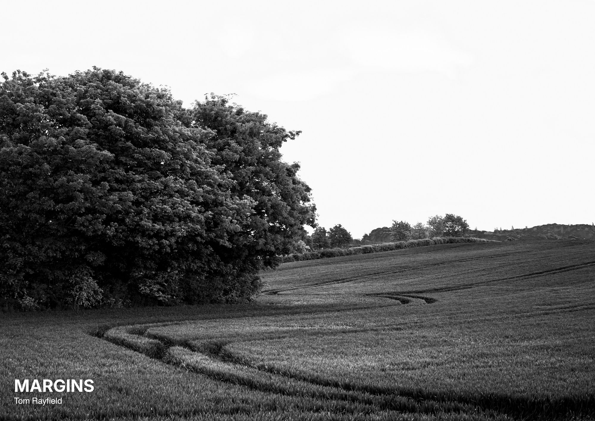
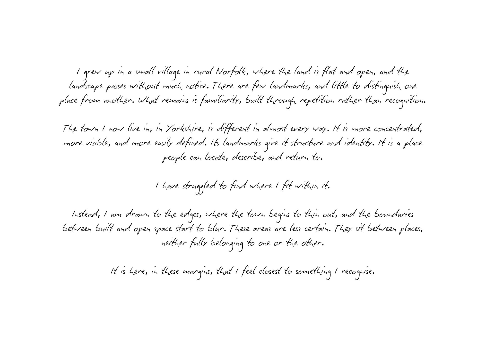
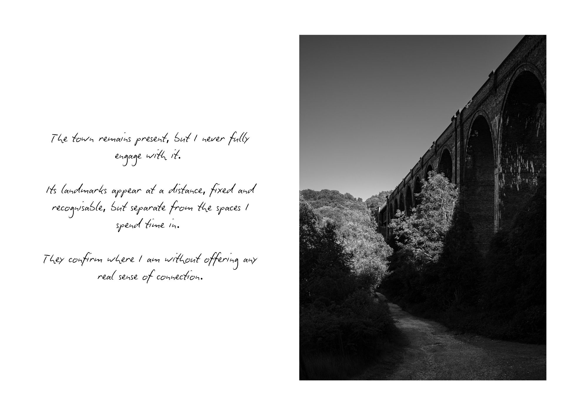
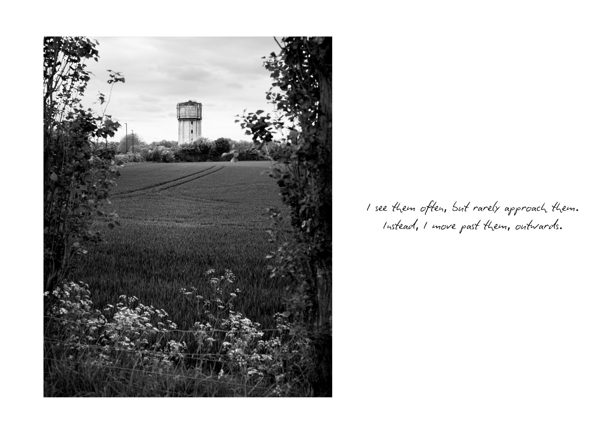
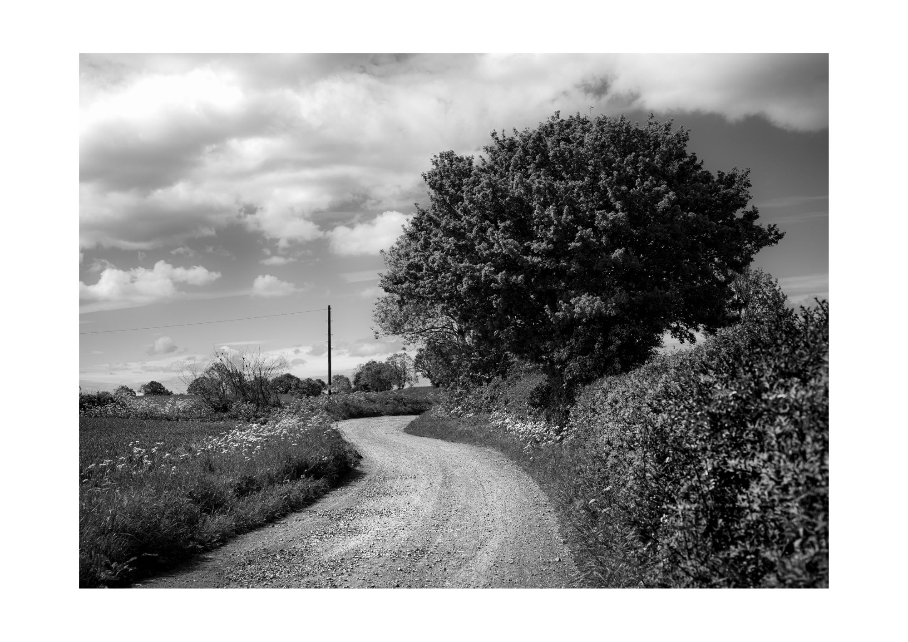
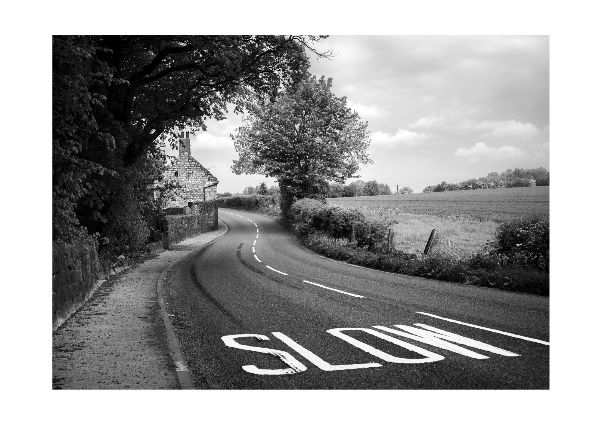
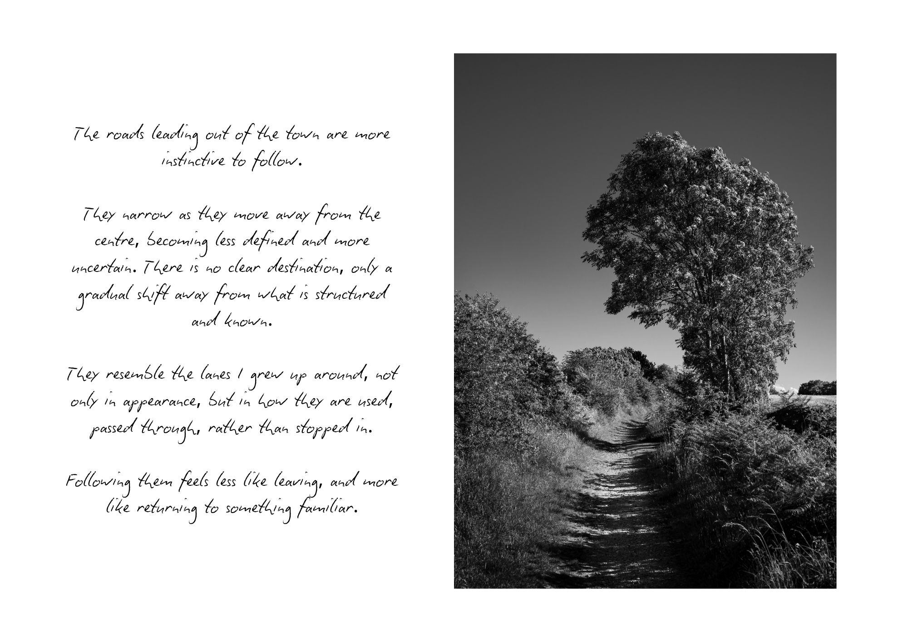
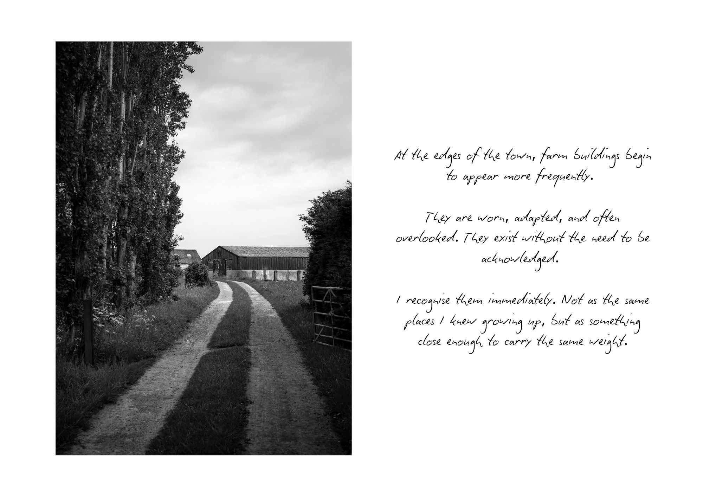
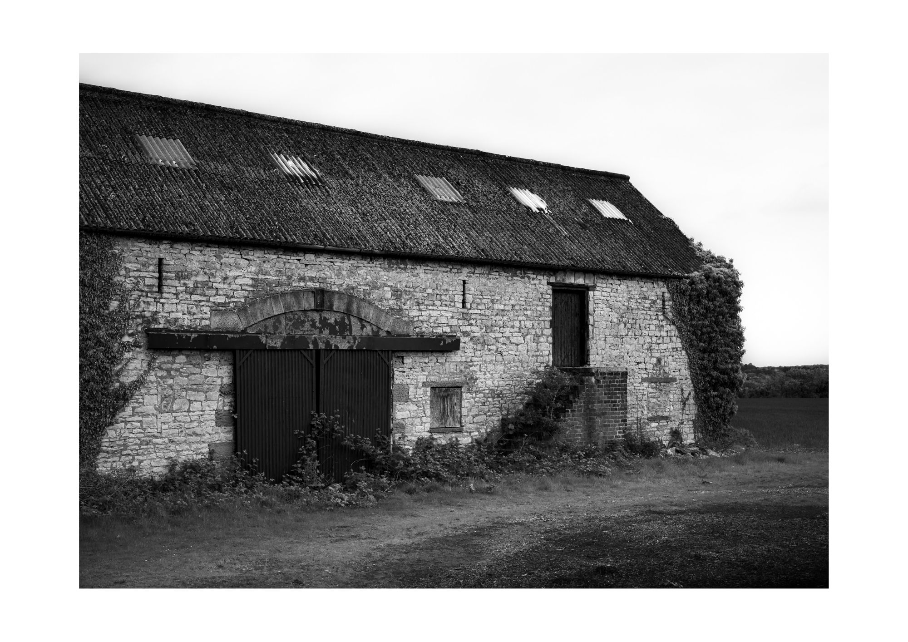
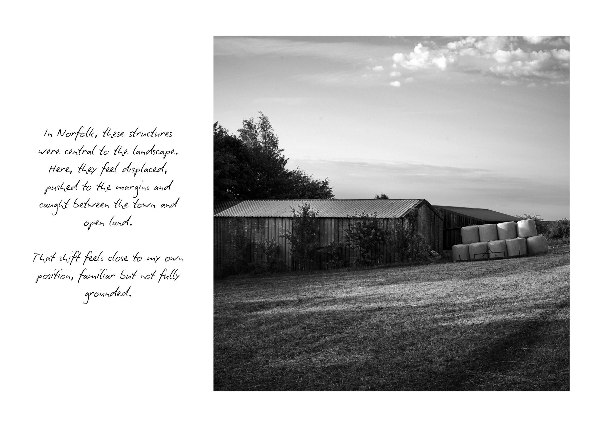
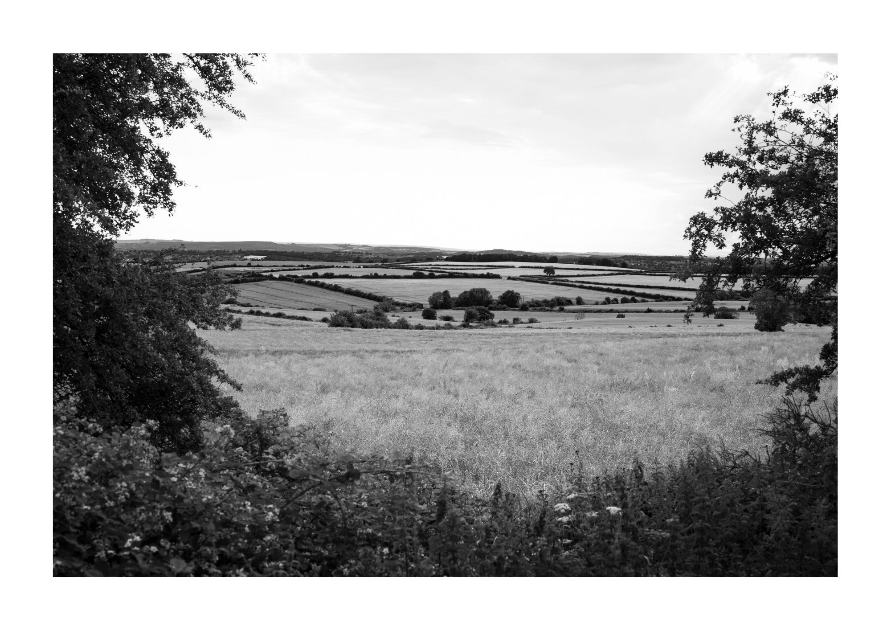

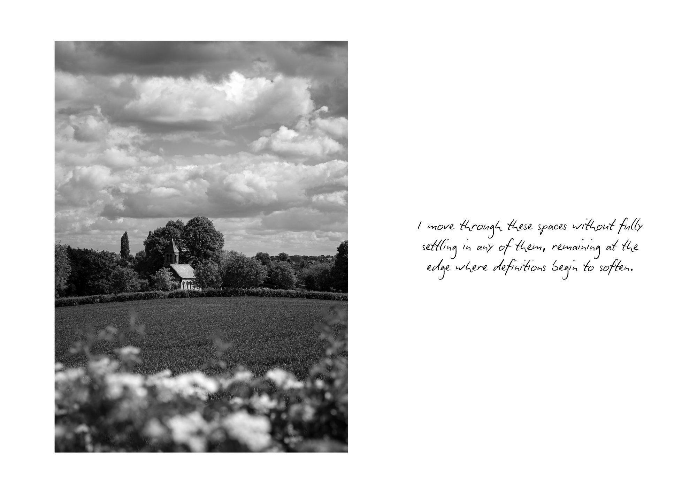
MARGINS: a black and white photography series documenting the edgelands of a small town in South Yorkshire.
Edgelands are the undefined thresholds where the built environment thins out and farmland begins.
This is accompanied by a short handwritten essay highlighting its contrast with rural Norfolk where Tom Rayfield grew up.











